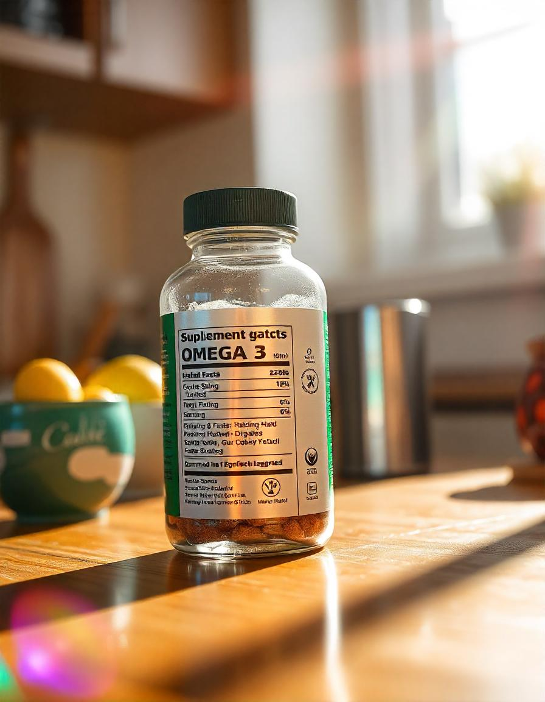

O Óleo de Peixe é um suplemento nutricional rico em ácidos graxos essenciais, especialmente os Ômega-3,
conhecidos por seus benefícios à saúde cardiovascular, cerebral e para o bem-estar geral. É uma das
fontes mais comuns de ácidos graxos essenciais.
Benefícios do Óleo de Peixe:
- Melhora a saúde cardiovascular, ajudando a reduzir o risco de doenças cardíacas e hipertensão.
- Auxilia na redução de inflamações no corpo, o que pode ajudar a aliviar sintomas de doenças
inflamatórias.
- Promove a saúde cerebral, contribuindo para a memória, concentração e função cognitiva.
- Apoia a saúde ocular, prevenindo doenças como a degeneração macular.
- Contribui para a saúde da pele, mantendo-a hidratada e melhorando sua aparência geral.
Onde Encontrar o Óleo de Peixe
O Óleo de Peixe pode ser encontrado em diversas lojas especializadas em suplementos alimentares, como:
- Loja X - Rua das Suplementos, 123
- Farmácia Y - Avenida da Saúde, 456
- Online: Sites como Mercado Livre, Amazon e lojas especializadas em nutrição esportiva.
Como Tomar o Óleo de Peixe
A dosagem recomendada de Óleo de Peixe varia de acordo com a necessidade de cada indivíduo e as
recomendações do fabricante. A forma mais comum de consumo é:
- Tomar 1 a 2 cápsulas de 1g a 3g por dia, conforme a recomendação do fabricante.
- O óleo de peixe pode ser consumido com as refeições para facilitar a absorção dos ácidos graxos.
- Em alguns casos, doses maiores podem ser recomendadas para obter efeitos específicos, como redução
de triglicerídeos ou inflamações.
É importante seguir as orientações do rótulo ou de um profissional da saúde para evitar o consumo
excessivo de óleo de peixe.
Como é Produzido o Óleo de Peixe
O Óleo de Peixe é extraído principalmente de peixes de águas frias, como salmão, cavala e arenque. O
processo de produção envolve as seguintes etapas:
- Extração do óleo do peixe, geralmente através de processos de prensagem ou destilação a vapor.
- Refino do óleo para remover impurezas e odores indesejados, mantendo as qualidades benéficas dos
ácidos graxos essenciais.
- Concentração dos ácidos graxos Ômega-3 (EPA e DHA) para aumentar a eficácia do suplemento.
- Encapsulamento ou embalagem do óleo em forma líquida ou em cápsulas, facilitando o consumo diário.
Esse processo garante que o óleo de peixe seja purificado, eficaz e adequado para consumo, mantendo suas
propriedades benéficas para a saúde.